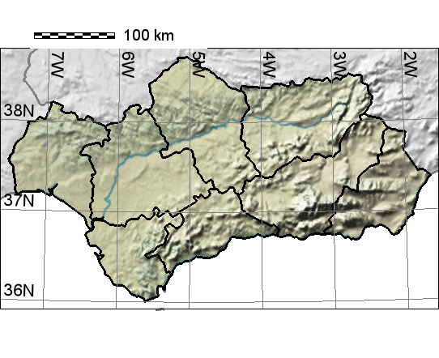
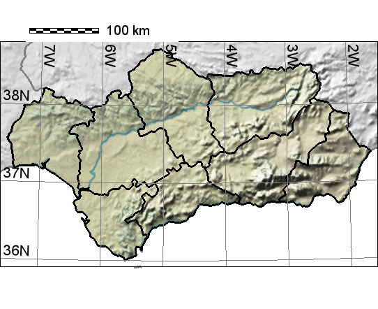

Report for "fruit weight (g DM per tree)"
Output maps


 

Please, click on images to see stat report.
You may also see raster statistics as barcharts (zoned and overall) and as cell frequency histogram.
Mapping parameters
- Parameter mapped: 14
- Lower cutting point: 0
- Upper cutting point: none
- Region clip:
- Altitude clip: 2000 m
- Stations above altitude clip were used to interpolate: yes
Input file log
This log reports names of input files used for analysis:
- FruWgt_Olive_30set19_00002
- FruWgt_Olive_30set19_00003
- FruWgt_Olive_30set19_00004
- FruWgt_Olive_30set19_00005
- FruWgt_Olive_30set19_00006
- FruWgt_Olive_30set19_00007
- FruWgt_Olive_30set19_00008
- FruWgt_Olive_30set19_00009
- FruWgt_Olive_30set19_00010
- FruWgt_Olive_30set19_00011
- FruWgt_Olive_30set19_00012
- FruWgt_Olive_30set19_00013
- FruWgt_Olive_30set19_00014
- FruWgt_Olive_30set19_00015
- FruWgt_Olive_30set19_00016
- FruWgt_Olive_30set19_00017
- FruWgt_Olive_30set19_00018
- FruWgt_Olive_30set19_00019
- FruWgt_Olive_30set19_00020
- FruWgt_Olive_30set19_00021
- FruWgt_Olive_30set19_00022
- FruWgt_Olive_30set19_00023
- FruWgt_Olive_30set19_00024
- FruWgt_Olive_30set19_00025
- FruWgt_Olive_30set19_00026
- FruWgt_Olive_30set19_00027
- FruWgt_Olive_30set19_00028
- FruWgt_Olive_30set19_00029
- FruWgt_Olive_30set19_00030
- FruWgt_Olive_30set19_00031
GIS script syntax used:
andalusia
w=0 g=0 l=0 x=0
a=0 d=0 u=0 c=0
r=1 p=1
SaveDir=/c/cygwin/home/andy/outfiles/andalusia_olive_nofly_FruWgt longitude=5 latitude=6 year=11
parameter=14 interpolation=bspline numpoints=3
lowercut=0 uppercut=0 legend1=fruit weight (g DM per tree) provinces=all
alt=2000 resolution=1 lowBarCol= upBarCol=
crop=olive crop_threshold=0.20
(Wed, 02 Oct 2019 19:18:58 +0200)